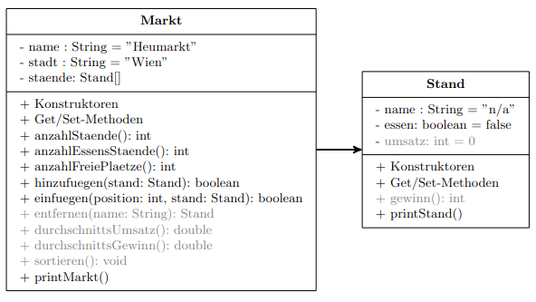

Lektion 2.5 — Teil 2: Datenstrukturen & OOP
Objekt-Arrays
Lernziele
- Arrays von Objektreferenzen anlegen und dabei mit
null-Einträgen umgehenAbschnitt 1 - Objekte ohne Lücken hinzufügen, an einer Position einfügen und entfernenAbschnitt 2
- Suchen nach einem Attribut (Name) mit Code-Wiederverwendung umsetzenAbschnitt 3
- über alle Objekte summieren, zählen und Durchschnitte bildenAbschnitt 2
- Objekte nach einem String-Attribut (
compareTo) bzw. einer Zahl sortierenAbschnitt 3
1 — Arrays von Objekten
Objekt-Arrays enthalten keine primitiven Werte, sondern Objektreferenzen. Sie werden nahezu
gleich verwendet wie Arrays primitiver Typen. Der wesentliche Unterschied: Die Werte können
null sein – nach new Stand[10] sind alle zehn Plätze null, es
gibt noch kein einziges Stand-Objekt.
Stand[] staende = new Stand[10]; // 10 Plätze, alle null
staende[0] = new Stand("Langos", true);
staende[0].getName(); // ok
staende[1].getName(); // NullPointerException!2 — Codebeispiel: Markt und Stand
Ein Markt hat ein Array an Marktständen (staende) sowie Name und Stadt. Ein
Stand hat einen Namen, ein Attribut essen (Essensstand?) und einen Umsatz.

Stand.java Code anzeigen (89 Zeilen)
public class Stand {
private String name;
private boolean essen;
private int umsatz;
public Stand() {
setName("n/a");
setEssen(false);
setUmsatz(0);
}
public Stand(String name) {
if (name != null) {
setName(name);
} else {
System.out.println("Fehler: Name ist null");
}
setEssen(false);
setUmsatz(0);
}
public Stand(String name, boolean essen) {
if (name != null) {
setName(name);
} else {
System.out.println("Fehler: Name ist null");
}
setEssen(essen);
setUmsatz(0);
}
public void setName(String name) {
if (name != null) {
this.name = name;
} else {
System.out.println("Name ist null");
}
}
public String getName() {
return name;
}
public void setEssen(boolean essen) {
this.essen = essen;
}
public boolean isEssen() {
return essen;
}
public void setUmsatz(int umsatz) {
if (umsatz >= 0) {
this.umsatz = umsatz;
} else {
System.out.println("Fehler: Ungueltiger Wert fuer Umsatz: " + umsatz);
}
}
public int getUmsatz() {
return umsatz;
}
public int getGewinn() {
// hier eine Umsetzung zum fuer dieses Beispiel etwas
// willkürlich definierten Gewinn
int gewinn = this.umsatz;
if (this.umsatz > 500) {
gewinn -= 100;
}
return gewinn / 2;
}
public String toString() {
String str = name;
if (essen) {
str += " (Essensstand), ";
} else {
str += " (Marktstand), ";
}
str += " Umsatz: " + getUmsatz();
return str;
}
public void printStand() {
System.out.println(this); // ruft toString() auf
}
}
hinzufuegen(stand: Stand): boolean prüft, ob ein freier Stellplatz vorhanden ist, und fügt den
Stand am ersten freien Platz ein. Der Rückgabewert gibt an, ob das geklappt hat; sonst gibt es zusätzlich
eine Fehlermeldung. Das Array wird so organisiert, dass keine Lücken entstehen: Alle
null-Werte befinden sich am Ende. Das gelingt wie bei den int-Arrays mit der
Variable anzahl.
Markt.java Code anzeigen (286 Zeilen)
public class Markt {
private String name;
private String stadt;
private Stand[] staende;
private int anzahl;
public Markt() {
setName("Heumarkt");
setStadt("Wien");
staende = new Stand[10];
anzahl = 0;
}
public Markt(String name, String stadt, int maxStaende) {
staende = new Stand[maxStaende];
setName(name);
setStadt(stadt);
anzahl = 0;
}
public Markt(int maxStaende) {
setName("Heumarkt");
setStadt("Wien");
staende = new Stand[maxStaende];
anzahl = 0;
}
public void setName(String name) {
if (name != null) {
this.name = name;
} else {
System.err.println("Ungueltiger Parameter (Name): null");
}
}
public String getName() {
return name;
}
public void setStadt(String stadt) {
if (stadt != null) {
this.stadt = stadt;
} else {
System.err.println("Ungueltiger Parameter (Stadt): null");
}
}
public String getStadt() {
return stadt;
}
public int anzahlStaende() {
return anzahl;
}
public int anzahlEssensStaende() {
int cnt = 0;
for (int i = 0; i < anzahl; i++) {
if (staende[i].isEssen()) {
cnt++;
}
}
return cnt;
}
public int anzahlFreiePlaetze() {
return staende.length - anzahl;
}
public boolean hinzufuegen(Stand stand) {
boolean hinzugefuegt = false;
if (stand != null) {
if (anzahl < staende.length) { // Platz vorhanden?
staende[anzahl++] = stand;
hinzugefuegt = true;
} else {
System.out.println("Stand konnte nicht eingefuegt werden, kein Platz vorhanden.");
}
} else {
System.out.println("Fehler: uebergebener Stand ist null.");
}
return hinzugefuegt;
}
public boolean einfuegen(int position, Stand stand) {
boolean hinzugefuegt = false;
if (stand != null) {
if (position >= 0 && position <= anzahl) {
if (anzahlFreiePlaetze() > 0) {
for (int i = anzahl; i > position; i--) {
staende[i] = staende[i-1];
}
staende[position] = stand;
anzahl++;
hinzugefuegt = true;
} else {
System.out.println("Fehler: kein freier Platz vorhanden.");
}
} else {
System.out.println("Fehler: ungueltige position " + position);
}
} else {
System.out.println("Fehler: stand ist null.");
}
return hinzugefuegt;
}
// Diese Methode kann zum Entfernen bezueglich Namen verwendet werden
public Stand entfernen(int pos) {
Stand s = null;
if (pos >= 0 && pos < anzahl) {
s = staende[pos];
for (int i = pos; i < anzahl - 1; i++) {
staende[i] = staende[i+1];
}
anzahl--;
staende[anzahl] = null;
} else {
System.out.println("Fehler: ungueltige Position " + pos);
}
return s;
}
// ohne Code-Reuse wird die Methode etwas komplizierter...
public Stand entfernen1(String name) {
Stand stand = null;
if (name != null) {
int pos = 0;
boolean gefunden = false;
while (!gefunden && pos < anzahl) {
if (staende[pos].getName().equals(name)) {
gefunden = true;
} else {
pos++;
}
}
if (gefunden) {
stand = staende[pos];
for (int i = pos; i < anzahl-1; i++) {
staende[i] = staende[i+1];
}
anzahl--;
staende[anzahl] = null;
} else {
System.out.println("Stand nicht gefunden");
}
} else {
System.out.println("Fehler: name ist null.");
}
return stand;
}
// ... mit Code-Reuse (Aufruf von entfernen(i)) ergibt sich eine wesentlich
// kuerzere und einfachere Implementierung
public Stand entfernen2(String name) {
if (name != null) {
for (int i = 0; i < anzahl; i++) {
if (name.equals(staende[i].getName())) {
return entfernen(i);
}
}
System.out.println("Es wurde kein Stand mit dem uebergebenen Namen gefunden.");
} else {
System.out.println("Fehler: name ist null.");
}
return null;
}
// Diese Methode ist zwar nicht im UML-Diagramm gegeben,
// erleichtert aber das Testen
public Stand getStand(int idx) {
if (idx >= 0 && idx < anzahl) {
return staende[idx];
} else {
return null;
}
}
public boolean hasStand(Stand stand) {
if (stand != null) {
for (int i = 0; i < anzahl; i++) {
if (staende[i] == stand) {
return true;
}
}
} else {
System.out.println("Fehler: Stand ist null.");
}
return false;
}
public double durchschnittsUmsatz() {
double sum = 0;
for (int i = 0; i < anzahl; i++) {
sum += staende[i].getUmsatz();
}
if (anzahl > 0) {
return sum / anzahl;
} else {
System.out.println("Fehler: kein Stand vorhanden.");
return 0;
}
}
public double durchschnittsGewinn() {
double sum = 0;
for (int i = 0; i < anzahl; i++) {
sum += staende[i].getGewinn();
}
if (anzahl > 0) {
return sum / anzahl;
} else {
System.out.println("Fehler: kein Stand vorhanden.");
return 0;
}
}
public void sortierenNamen() { // Bubble-Sort
boolean getauscht = true;
while (getauscht) {
getauscht = false;
for (int i = 0; i < anzahl-1; i++) {
if (staende[i].getName().compareTo(staende[i+1].getName()) > 0) {
vertausche(i, i+1);
getauscht = true;
}
}
}
}
public Stand[] sortierenUmsatz() { // Selection-Sort
Stand[] sortierteStaende = new Stand[anzahl];
for (int i = 0; i < anzahl; i++) {
sortierteStaende[i] = staende[i];
}
for (int i = 0; i < anzahl-1; i++) {
int jMin = i;
for (int j = i+1; j < anzahl; j++) {
if (sortierteStaende[j].getUmsatz() < sortierteStaende[jMin].getUmsatz()) {
jMin = j;
}
}
if (i != jMin) {
Stand tmp = sortierteStaende[i];
sortierteStaende[i] = sortierteStaende[jMin];
sortierteStaende[jMin] = tmp;
}
}
return sortierteStaende;
}
// diese Methode ist "private" weil sie nur von sortieren()
// aufgerufen werden soll, aber nicht von außerhalb der Klasse!
private void vertausche(int i, int j) {
if (i >= 0 && j >= 0 && i < anzahl && j < anzahl) {
Stand tmp = staende[i];
staende[i] = staende[j];
staende[j] = tmp;
} else {
System.out.println("Fehler: ungueltige Indizes: i=" + i + ", j=" + j);
}
}
public void printMarkt() {
System.out.println("Name: " + getName());
System.out.println("Stadt: " + getStadt());
System.out.println("------------------------------------------------------");
for (int i = 0; i < anzahl; i++) {
System.out.print("Stand " + (i+1) + ": ");
if (staende[i] != null) {
staende[i].printStand();
} else {
System.out.println(" LEER ");
}
}
System.out.println("------------------------------------------------------");
}
}3 — Was das Beispiel zeigt
- Keine Lücken: Alle Schleifen laufen nur bis
anzahl; dort sind alle Einträge garantiert nichtnull. Deshalb brauchtanzahlEssensStaendekeinenull-Prüfung. - Entfernen mit Rückgabe:
entfernen(int pos)liefert den entfernten Stand zurück – der Aufrufer kann ihn weiterverwenden (z. B. auf einem anderen Markt aufstellen). - Code-Wiederverwendung:
entfernen1(String)setzt alles in einer Methode um und wird dadurch kompliziert. Besser istentfernen2, die nur sucht und dannentfernen(int pos)aufruft. - Referenzvergleich:
hasStandprüft mit==, ob genau dieses Stand-Objekt auf dem Markt steht. - Sortieren nach Text:
a.compareTo(b)liefert einen Wert < 0, wennaalphabetisch vorbkommt, 0 bei Gleichheit und > 0 sonst. - Sortierte Kopie:
sortierenUmsatzsortiert eine Kopie des Arrays und lässt die Reihenfolge am Markt unverändert.
Projektschritt
Die Firma mit einem Mitarbeiter-Array
Die drei festen Plätze ma1–ma3 werden durch ein Array Mitarbeiter[] personal mit anzahl ersetzt. Das macht die Firma kürzer und mächtiger: einstellen, an Position einfügen, kündigen nach Position, Name oder Referenz (Code-Wiederverwendung), Kosten summieren, nach Namen sortieren. Der Mitarbeiter erhält eine toString()-Methode, die die Firma für ihre Ausgabe nutzt.
src/main/java/Firma.java Code anzeigen (206 Zeilen)
/*
Personalverwaltung – eine Firma mit einem Array an Mitarbeitern.
Stand: Lektion 2.5 (Objekt-Arrays)
*/
public class Firma {
private String name;
private Mitarbeiter[] personal;
private int anzahl; // gültige Einträge, keine Lücken
public Firma() {
setName("n/a");
personal = new Mitarbeiter[10];
anzahl = 0;
}
public Firma(String name) {
setName(name);
personal = new Mitarbeiter[10];
anzahl = 0;
}
public Firma(String name, int maxMitarbeiter) {
setName(name);
if (maxMitarbeiter > 0) {
personal = new Mitarbeiter[maxMitarbeiter];
} else {
System.out.println("Fehler: ungueltige Groesse: " + maxMitarbeiter);
personal = new Mitarbeiter[10];
}
anzahl = 0;
}
public String getName() {
return name;
}
public void setName(String name) {
if (name != null && !name.isBlank()) {
this.name = name;
} else {
System.out.println("Fehler: ungueltiger Name: " + name);
this.name = "n/a";
}
}
public int anzahlMitarbeiter() {
return anzahl;
}
public int anzahlFreiePlaetze() {
return personal.length - anzahl;
}
public Mitarbeiter getMitarbeiter(int index) {
if (index >= 0 && index < anzahl) {
return personal[index];
} else {
return null;
}
}
public boolean einstellen(Mitarbeiter m) {
return einfuegen(anzahl, m); // Spezialfall von einfuegen
}
public boolean einfuegen(int position, Mitarbeiter m) {
if (m == null) {
System.out.println("Fehler: Mitarbeiter ist null.");
return false;
}
if (position < 0 || position > anzahl) {
System.out.println("Fehler: ungueltige Position " + position);
return false;
}
if (anzahlFreiePlaetze() == 0) {
System.out.println("Fehler: kein freier Platz vorhanden.");
return false;
}
for (int i = anzahl; i > position; i--) {
personal[i] = personal[i - 1];
}
personal[position] = m;
anzahl++;
return true;
}
public Mitarbeiter kuendigen(int position) {
if (position >= 0 && position < anzahl) {
Mitarbeiter m = personal[position];
for (int i = position; i < anzahl - 1; i++) {
personal[i] = personal[i + 1];
}
anzahl--;
personal[anzahl] = null; // letzten Platz freigeben
return m;
} else {
System.out.println("Fehler: ungueltige Position " + position);
return null;
}
}
// Code-Wiederverwendung: suchen und dann kuendigen(int) aufrufen
public Mitarbeiter kuendigen(String name) {
if (name != null) {
for (int i = 0; i < anzahl; i++) {
if (name.equals(personal[i].getName())) {
return kuendigen(i);
}
}
System.out.println("Fehler: kein Mitarbeiter mit Namen " + name);
} else {
System.out.println("Fehler: name ist null.");
}
return null;
}
public boolean kuendigen(Mitarbeiter m) {
for (int i = 0; i < anzahl; i++) {
if (personal[i] == m) {
kuendigen(i);
return true;
}
}
return false;
}
public int summeKosten() {
int summe = 0;
for (int i = 0; i < anzahl; i++) {
summe += personal[i].getKostenProMonat();
}
return summe;
}
public double durchschnittsKosten() {
if (anzahl > 0) {
return (double) summeKosten() / anzahl;
} else {
return 0;
}
}
// Bubble-Sort nach Namen (String.compareTo)
public void sortierenNachName() {
boolean getauscht = true;
while (getauscht) {
getauscht = false;
for (int i = 0; i < anzahl - 1; i++) {
if (personal[i].getName().compareTo(personal[i + 1].getName()) > 0) {
vertausche(i, i + 1);
getauscht = true;
}
}
}
}
// private: nur für sortierenNachName gedacht
private void vertausche(int i, int j) {
Mitarbeiter tmp = personal[i];
personal[i] = personal[j];
personal[j] = tmp;
}
private String linie(char zeichen, int laenge) {
String s = "";
for (int i = 0; i < laenge; i++) {
s += zeichen;
}
return s;
}
private String auffuellen(String text, int breite) {
String s = text;
while (s.length() < breite) {
s += " ";
}
return s;
}
public void printKostenBalken() {
System.out.println("Kosten pro Monat (# = 500 Euro)");
System.out.println(linie('=', 47));
for (int i = 0; i < anzahl; i++) {
System.out.println(auffuellen(personal[i].getName(), 16)
+ personal[i].kostenBalken());
}
System.out.println(linie('=', 47));
}
@Override
public String toString() {
String str = "Firma: " + name + "\n" + linie('-', 47) + "\n";
for (int i = 0; i < anzahl; i++) {
str += (i + 1) + ": " + personal[i] + "\n";
}
str += linie('-', 47) + "\n";
str += "Kosten pro Monat: " + summeKosten() + " Euro (" + anzahl + " Mitarbeiter, "
+ anzahlFreiePlaetze() + " Plaetze frei)";
return str;
}
public void print() {
System.out.println(this);
}
}📁 Stand nach dieser Lektion: beispiele/2.5/ (inkl. FirmaTest mit Einfügen, Kündigen ohne Lücken und Sortieren)
Häufige Fehler
3 Fehler · zum Aufklappen klicken
for (int i = 0; i < staende.length; i++) staende[i].getUmsatz() → NullPointerException, sobald nicht alle Plätze belegt sind.
Nur bis anzahl laufen – dahinter stehen null-Einträge.
Der entfernte Platz wird nur auf null gesetzt; später stürzt eine Schleife an dieser Stelle ab.
Nach dem Entfernen alle folgenden Einträge um eins nach vorne ziehen und anzahl verringern; den letzten Platz auf null setzen.
if (staende[i].getName() == name) findet den Stand nicht, obwohl der Name gleich geschrieben ist.
Strings mit equals vergleichen: name.equals(staende[i].getName()).
Aufgaben
1 Aufgabe · zum Aufklappen klicken
Der Markt verwaltet seine Stände jetzt in einem Objekt-Array: hinzufügen, an einer Position einfügen, nach Namen entfernen, Durchschnittswerte berechnen und sortieren.
Quiz
4 Fragen · zum Aufklappen klicken
Frage 1 Was enthält ein Objekt-Array direkt nach Kunde[] kunden = new Kunde[4];?
new erzeugt und eingetragen werden.Frage 2 Warum wird beim Summieren über ein lückenlos befülltes Objekt-Array nur bis anzahl statt bis length gezählt?
anzahl - 1 sind belegt. Ein Methodenaufruf auf einem leeren Platz würde eine NullPointerException auslösen.Frage 3 Was liefert "Apfel".compareTo("Birne")?
compareTo liefert eine negative Zahl, wenn der erste String alphabetisch vorher kommt, 0 bei Gleichheit und eine positive Zahl, wenn er danach kommt.Frage 4 Eine Klasse hat schon eine Methode entfernen(int pos). Nun soll ein Objekt nach seinem Namen entfernt werden. Was ist die bessere Lösung?